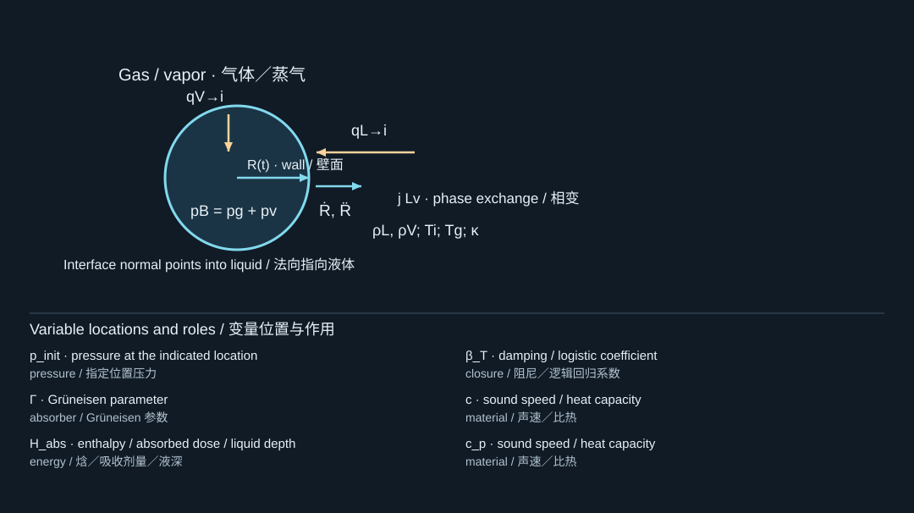

10. How lasers create bubbles and loading
激光如何产生气泡与载荷
10.1 Start from the energy pathway
从能量传递路径开始
“Laser-induced” specifies the initiating technology, not a unique physical mechanism. Before selecting a bubble model, identify where light is absorbed, what first receives the deposited energy, and how that energy reaches the liquid. Your source collection contains at least four distinct pathways: optical breakdown in the liquid; photothermal heating of an absorber or reservoir; optoacoustic generation of remote ultrasound; and phase-change droplet activation. [S408, S415, S390, S350]
“激光诱导”说明的是启动技术，而不是唯一物理机制。选择气泡模型之前，应明确光在哪里被吸收、什么物质首先获得沉积能量，以及能量如何到达液体。你提供的资料至少包含四种不同路径：液体中的光学击穿；吸收体或储液区的光热加热；产生远程超声的光声转换；以及相变液滴激活。[S408, S415, S390, S350]
10.2 Optical breakdown
光学击穿
A sufficiently intense focused optical pulse can create an ionized region and rapid energy deposition. A hot pressurized cavity and an initial shock may then form. The subsequent bubble oscillation is not initialized correctly merely by setting the ambient liquid temperature a little above its boiling point. Plasma dimensions, pulse duration, deposited energy, and the chosen compressible model determine the early stage. [S408, S409]
足够强的聚焦光脉冲可以产生电离区和快速能量沉积，随后可能形成高温高压空腔及初始激波。若只把环境液体温度设得略高于沸点，并不能正确初始化后续气泡振荡。等离子体尺度、脉冲时长、沉积能量和所选可压缩模型共同决定早期过程。[S408, S409]
The near-threshold picosecond study [S408] reports distinct cavitation-event regimes with very different mechanical conversion despite small changes in excitation. Its warning for modeling is that a smooth, constant laser-to-bubble efficiency should not be assumed across a mechanism transition.
近阈值皮秒研究[S408]报告了不同空化事件区间：即使激励变化很小，机械转换也可能显著不同。对建模而言，这提醒我们不要假设跨越机制转变时，激光到气泡的转换效率仍然平滑且恒定。
10.3 Absorber heating and thermocavitation
吸收体加热与热空化
In photothermal nucleation, light is absorbed in particles, a coating, or a liquid region, and heat reaches the material that vaporizes. Let be absorbed energy per volume. If losses and phase change are initially negligible, . This is an initial sensible-heat estimate, not a formula for the final temperature after vaporization.
在光热成核中，光被颗粒、涂层或某个液体区域吸收，随后热量到达发生汽化的材料。令为单位体积吸收能量。若初始阶段损失和相变可以忽略，则。这只是初始显热升温估计，不是汽化后最终温度的计算公式。
The microabsorber experiments [S415] emphasize rapid heat transfer around individual absorbers. The plasmonic-bubble work [S414] emphasizes delayed nucleation and stored heat. The microfluidic thermocavitation source [S407] uses heating and confinement to create jets. Their heating times, absorbers, and geometries differ; one cannot transplant a nucleation temperature or jet-energy efficiency between them without a matching model.
微吸收体实验[S415]强调单个吸收体周围的快速传热；等离激元气泡研究[S414]强调延迟成核与储存热量；微流控热空化研究[S407]则利用加热和约束形成射流。它们的加热时间、吸收体和几何不同，不能在缺乏相容模型时直接移植成核温度或射流能量效率。
10.4 Thermoelastic sound and confinement
热弹性声波与约束条件
An absorber can launch sound through rapid thermal expansion without itself being the liquid that later cavitates. Let be its relevant absorption or heated length scale. Thermal confinement requires the pulse to be short compared with ; stress confinement requires it to be short compared with . Under suitable linear thermoelastic assumptions, an initial pressure scale is
吸收体可以通过快速热膨胀发射声波，而吸收体本身未必是随后发生空化的液体。令为相关吸收深度或受热长度。热约束要求脉冲远短于，应力约束要求脉冲远短于。在适当线性热弹性假设下，初始压力尺度为

The diagram locates the physical system; its key lists the symbols in the formula. Read the definition in the surrounding derivation when a letter has different roles.
图示标出物理体系，图例列出公式中的符号。若某字母有多种作用，应以邻近推导中的定义为准。
where is the volumetric thermal expansion coefficient and is specific heat per mass. For a layered solid–polymer transmitter, effective response also depends on elasticity, interfaces, thickness, and acoustic transmission. Equation (10.1) is not a substitute for that layered-source calculation.
其中为体积热膨胀系数，为单位质量定压比热。对于层状固体—聚合物发射器，有效响应还取决于弹性、界面、厚度和声透射。式(10.1)不能替代层状声源的完整计算。
10.5 Reading the Lee–Guo experiment correctly
正确理解Lee–Guo实验
In Lee et al. (2015), “Nozzle-Free Liquid Microjetting via Homogeneous Bubble Nucleation”, a carbon-nanotube/PDMS optoacoustic transmitter converts absorbed laser energy into focused ultrasound. The acoustic field near the liquid–air interface creates a strong negative-pressure stage that nucleates bubbles. Bubble growth and collapse then generate liquid jets. This is not simply direct laser heating of the printing liquid until it boils. [S390]
在Lee等人2015年的《Nozzle-Free Liquid Microjetting via Homogeneous Bubble Nucleation》中，碳纳米管/PDMS光声发射器将吸收的激光能量转换为聚焦超声。液—气界面附近的声场形成强负压阶段并触发成核，随后气泡增长和塌缩产生液体射流。这并不是简单地用激光直接加热打印液体直至沸腾。[S390]
The paper's 12.5-micrometer PVC film separates the transmitter's coupling water from the jetting liquid while permitting acoustic transmission. That PVC layer is not the same object as a deliberately deforming carrier film holding a solid transfer payload. Reusing the material name does not reproduce the mechanical boundary conditions. [S390]
论文中的12.5微米PVC薄膜用于隔离发射器耦合水与喷射液体，同时允许声波透过。这一PVC层不等于专门发生变形、承载固体转印对象的载体薄膜。使用相同材料名称，并不意味着复现了相同机械边界条件。[S390]
The later CNT-electronics printing study [S251] belongs to this laser-generated focused-ultrasound lineage. By contrast, the hydrogel-composite-stamp study [S72] uses phase change within a stamp to change surface geometry and adhesion. These are related engineering goals reached through different transduction and release mechanisms.
后续CNT电子器件打印研究[S251]属于激光产生聚焦超声的技术路线。相比之下，水凝胶复合印章研究[S72]利用印章内部相变改变表面几何和黏附状态。二者的工程目标相关，但能量转换与释放机制不同。
10.6 Blisters, stress waves, and bubbles
鼓包、应力波与气泡
In blister-actuated laser-induced forward transfer, motion of a donor-side blister can create a low-pressure region in the liquid and thereby induce secondary cavitation. The direct observation in [S343] is important because bubble involvement should be demonstrated, not inferred from the word “laser.” The thin-film delamination study [S340] instead emphasizes a remotely generated stress wave as the loading route. Both remind us to distinguish the source, the transmission path, and the failure mechanism.
在鼓包驱动激光诱导前向转移中，供体侧鼓包运动可以在液体中形成低压区，进而诱发次生空化。[S343]的直接观测十分重要，因为气泡是否参与应由证据证明，而不能从“激光”一词推断。[S340]中的薄膜分层研究则强调远端生成的应力波加载路径。两者都提醒我们，应区分载荷源、传递路径和失效机制。
Model-selection exercise. Write a five-link chain for any apparatus: optical input; absorbing material; first physical response; transmitted loading; measured output. If you cannot fill in one link, treat it as an unresolved model choice rather than silently filling it with “bubble pressure.”
模型选择练习。为任意装置写出五环节链条：光学输入；吸收材料；最初物理响应；传递载荷；测量输出。如果某一环节无法明确，应把它记录为尚未解决的模型选择，而不是默默用“气泡压力”补上。